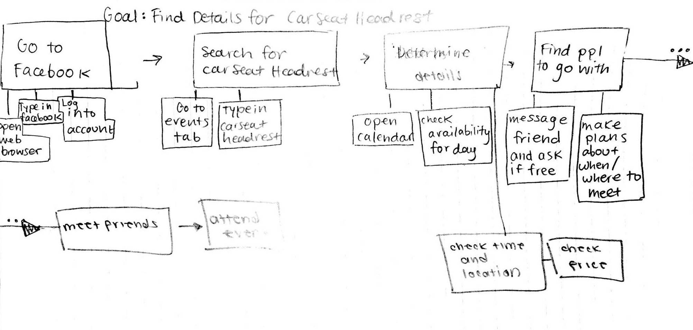
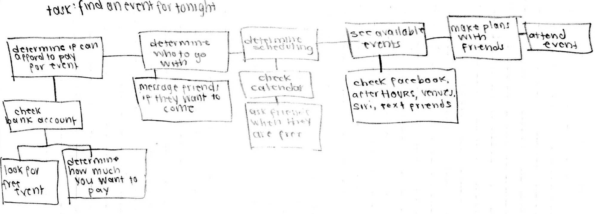
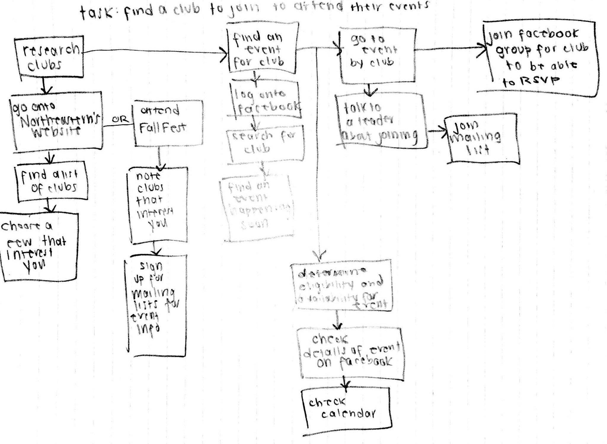

myCampus
At a school with a student population as large as Northeastern University's, it can be overwhelming to keep track of all the different events on campus, especially for new students. MyCampus serves as a platform for students to discover these events and have one calendar where they are available. Not only can students find the events that they are looking for, but they can also explore ones held by clubs they may have not ever even heard of.
|
Users
Stakeholders
-
Primary stakeholders: first-year students, transfer-students, second-year students
-
Our primary stakeholders are, most specifically, first-year students at Northeastern University. In comparison to older students, first-years have yet to find the types of clubs and activities that they belong to on campus. Another class of primary stakeholders are transfer students because they need to go to events to make friends. However, less specifically our app could also service any Northeastern Student.
-
Secondary stakeholders: club organizers, administrators, event planners
-
Our secondary stakeholders that provide input are those involved in creating the events presented by our app, as they would have to adjust the event based on the number of attendees. These include club organizers, administrators, event planners, etc. On the other hand, those that receive output include friends of students using the app, who may be influenced to tag-along with their friend to an event.
-
Tertiary stakeholders: parents, faculty and staff
-
Our tertiary stakeholders include university faculty (who will be happy to be keeping students on campus on the weekends), janitorial staff (who will have more to clean-up), other attendees of the event (who will be dealing with the crowd), the entertainment at the event (who will have to satisfy a larger crowd), owners of the event venues, parents of students (who will have happier kids) and ticket sellers (who will have more traffic). These are all people who are affected by the success of the app due to its potential to increase the number of attendees at the event.
-
Facilitating stakeholders: developers
-
Finally, the facilitating stakeholders for MyCampus include our team who will be creating and maintaining the interface and app.
Personas
-
Frank Einstein is a first-year Business major from New York who is looking to get involved in greek life and will be rushing in his first fall semester. However, he does not know much about greek life and is overwhelmed by the number of welcome events offered by different fraternities and groups on campus. Many times on campus he is bombarded my recruiters trying to get him to join their fraternity, and cannot process the plethora of information. He also enjoys going to concerts, but he doesn't have a lot of money to do so as a student. Therefore he is interested in discovering new indie bands and other free concerts. He has heard about after hours, but it was only in passing and does not know where it is, as well as the schedule of events. He is living in Stetson West with a random roommate, who he does not get along well with. They have different interests, and his roommate is not interested in hanging out with Frank or rushing with him. Therefore, Frank is on his own and lost in this big new campus.
-
Samantha Johnson transferred here from Connecticut College in the middle of the year. She transferred because there were not enough student groups for black students at Connecticut College and figured that there would be more of these groups at Northeastern. She was upset to be leaving the friends she made at Connecticut, but they promised to stay in touch and to visit on vacations. For this reason, she is nervous. However, she also enjoys soccer and painting and is looking for events related to these as well. She is generally a very friendly person and is more worried about being integrated academically rather than socially. After switching out of Behavioral Neuroscience in Connecticut, she decided to focus on her true passion of Psychology.
-
Phillip Moore is a third year Health Science major at Northeastern. He loves coming to school here because he has a nice network of friends he hangs out with; he did his last co-op at Boston Children's Hospital doing research. This semester he is searching for another co-op in Boston, in addition to taking 4 classes and becoming involved in a research project at Bouve. He is very busy this semester, so he is not really looking to explore different clubs and activities. Things he likes to do on campus that are not related to his major are playing intramural volleyball with a couple of his friends, as well as going on jogs on the weekends when it is nice out. However, Philip does like scrolling through campus events on Facebook to see if there is a concert or other event to go to on the weekends.
|
Tasks
-
Find details for a specific event

For example, when users would like to attend the Car Seat Headrest concert tonight, but need where or when it is.
-
Find something for tonight

Another task would be to find an event the user could attend on a certain date.
-
Find a club to join and go to those events

Lastly, a student may want to join a club and begin attending the events.
|
Problem Scenarios
** strikethrough represents revisions made after doing our Activity Design Scenarios in P3, we realized that solutions should be entirely absent from theses- we originally had 'existing' solutions, as shown below.
-
Mark White is a first year Computer Science student who just finished his first week of classes. He hasn't had the chance to make a lot friends yet, but he heard from his roommate that there is a band playing on campus this weekend that he is interested in, Car Seat Headrest. He wants to know more information, but he is too shy to initialize a conversation with his roommate, or anyone else on campus. To solve this problem, he turns to the internet for answers.
He goes on to facebook, and searches the name "Car Seat Headrest" in the search bar. Once he finds the band's facebook page, he scrolls down to their events section. There, he finds the concert posting happening that weekend. He clicks on the event, and on the event page he sees where and when the concert is, and what the price is.
He searches Google for "Car Seat Headrest", but is overwhelmed by the number of responses.
-
Jenny Malone is a second year Chemistry student back on campus for the fall, and just got out of her last class for the week. All of her close friends are on Co-op this semester, so she does not have any plans for the night. However, she does not want to sit around in her room watching Netflix, so she decides to find an event on campus to go to. She enjoys sports, and decides that she wants find an athletic event that is free. She does not know if there is a dedicated facebook page for Northeastern Athletics, so she goes to myNeu.
Once she is logged on, she goes over to the community tab and finds the number for the athletic department. She calls the office, and finds out that there is a hockey game tonight at 7:30pm, at Matthews arena. It is a free event, so she decides to go. She puts on her husky hat, and heads to hockey! However, she is not sure where to go from there and is very confused by the interface. She instead decides to go to a concert that a poster in her dorm advertised.
-
Gregory is a first year undeclared major. He is an international student from China and is experiencing a bit of culture shock adjusting to the new American culture. He is living in International Village, but he has a single so he doesn't interact with anybody. After being on campus for about a month, he is starting to miss his traditions back home, as well as the support of friends. To circumvent his troubles, he decides he wants to join a club and go their events. He hears that there is an activity fair happening this weekend,
so he decides to attend and see if he can find and like minded individuals that he gets along with. Once at the fair, he walks around and eventually discovers the Chinese Student Association. From there, he learns that they meet every other wednesday from 5 to 7. He joins the emailing list so that he can know about future events. but it conflicts with another one of his plans and he is too anxious to attend.
|
Usability Requirements
-
A novice user must be able to find a concert Friday at 10pm within 3 minutes with 0 errors
- An experienced, second year student must be able to find whether they are scheduled to attend an event that is happening tonight within a minute with 0 errors
|